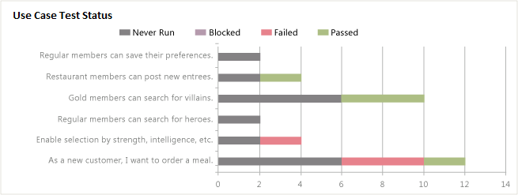

Teams who are responsible for testing software can use the Testing Gaps report to help determine where there are deficiencies in their test plans, test configurations, and test coverage. The Testing Gaps report provides the following five reports based on test results and builds that have been defined and run for a team project.
-
Use Case Test Status: Helps the team identify gaps in test coverage for each use case. This report requires that team members link test cases to use cases.
-
Use Case Test Status by Config: Helps the team identify gaps in test coverage for each test configuration for each use case. This report requires that team members link test cases to use cases.
-
Test Status by Area: Helps the team identify gaps in test coverage of product areas. This report requires that team members assign test cases to product areas.
-
Tests Not Executed: Helps the team identify test cases that have never been run for each test configuration.
The first four reports are available only when the team creates test plans and starts to run tests by using Microsoft Test Manager. For information about how to define test suites and test plans, see Defining Your Testing Effort Using Test Plans.
|
|
|---|
|
You can access the Use Case Testing report from the Excel Reports folder for the team project in Team Explorer. You can access this folder only if your team project portal has been enabled and is provisioned to use SharePoint Products. For more information, see Access a Team Project Portal and Process Guidance. |
|
In this topic |
Related topics |
Required Permissions
To view the report, you must be assigned or belong to a group that has been assigned the Read permissions in SharePoint Products for the team project.
To modify or customize the report, you must be a member of the TfsWarehouseDataReaders security role in SQL Server Analysis Services. You must also be assigned or belong to a group that has been assigned the Members permissions in SharePoint Products for the team project. For more information, see Grant Access to the Databases of the Data Warehouse for Visual Studio ALM and Managing Permissions.
 Data
in the Reports
Data
in the Reports
The Testing Gaps reports show the cumulative count of test results for the test plans, test configurations, and test cases that are defined for a team project. All reports are based on PivotTables that access data that is stored in the data warehouse.
Test Coverage of Use Cases
The Use Case Status report indicates how many tests are passing or failing for each use case. It provides a horizontal bar chart that shows the count of test results for each test case and test configuration combination that the team has defined for each use case. The report presents the cumulative outcome of tests run for all test cases that are linked to use cases. The report displays results that are filtered by the following outcomes: Passed (green), Failed (red), Never Run (blue), or Blocked (yellow).
The Use Case Status by Config report presents the test results for each use case, grouped by test configuration.
The following table describes the report filters and fields that are used in the PivotTables that generate the reports that are focused on test coverage of use cases.
|
Filters |
Fields |
|---|---|
Filter specific to the Use Case Status by Config report :
|
|
Test Coverage by Product Area
The Test Status by Area report indicates how many test cases are passing or failing for a team project by product area. The following table describes the report filters and fields that are used in the PivotTable reports that generate the Test Status by Area report.
|
Filters |
Fields |
|---|---|
|
|
Tests Cases That Have Never Run
The Tests Not Executed report indicates how many test cases have never run. The test cases are grouped by test configuration and test result owner. The following table describes the report filters and fields that are used in the PivotTable reports that generate the Test Status by Area report.
|
Filters |
Fields |
|---|---|
|
|
Required
Activities for Monitoring Testing Gaps
For the Testing Gaps reports to be useful and accurate, the team must perform the activities that are described in the following table:
|
Worksheet report |
Required activities |
||
|---|---|---|---|
|
|
||
|
|
||
|
|
||
|
|
||
|
|
Updating
and Customizing the Report
You can update the Testing Gaps report by opening it in Office Excel and changing the filter options for the PivotTable report for one of the worksheets. You can customize each report to support other views, as the following table describes.
|
Worksheet |
View |
Action |
|---|---|---|
|
Testing gaps for an iteration |
Change the filter for Iteration(default=All) |
|
Testing gaps for a product area |
Change the filter for Area(default=All) |
|
Testing gaps for a specific test plan or set of test plans |
Change the filter for Test Plan(default=All) |
|
Testing gaps for a specific test suite |
Change the filter for Test Suite Hierarchy(default=All) |
|
Testing gaps or code coverage that includes data from the most recent six, eight, or more weeks |
In the Columns PivotTable Field List, add the Date - Setsfield, and specify @@Last 6 weeks@@or other set |
For more information about how to work with and customize PivotTable and PivotChart reports, see the following pages on the Microsoft Web site: